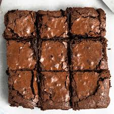

Brownie

Description
This easy brownie recipe takes about 30 minutes to make from start to finish for a chocolaty treat!
- 2 cups white sugar
- 1 1/2 cups all-purpose flour
- 1 cup butter, melted
- 4 eggs
- 1/2 cup cocoa powder
- 1 teaspoon vanilla extract
- 1/2 teaspoon baking powder
- 1/2 teaspoon salt
- 1/2 cup chopped walnuts
- Preheat the oven to 350 degrees F (175 degrees C). Grease a 9x13-inch pan.
- Mix sugar, flour, melted butter, eggs, cocoa powder, vanilla, baking powder, and salt in a large bowl until combined.
Fold in chopped walnuts. Spread the batter into the prepared pan.
- Bake in the preheated oven until top is dry and edges have started to
pull away from the sides of the pan, about 20 to 30 minutes; cool before slicing into squares.